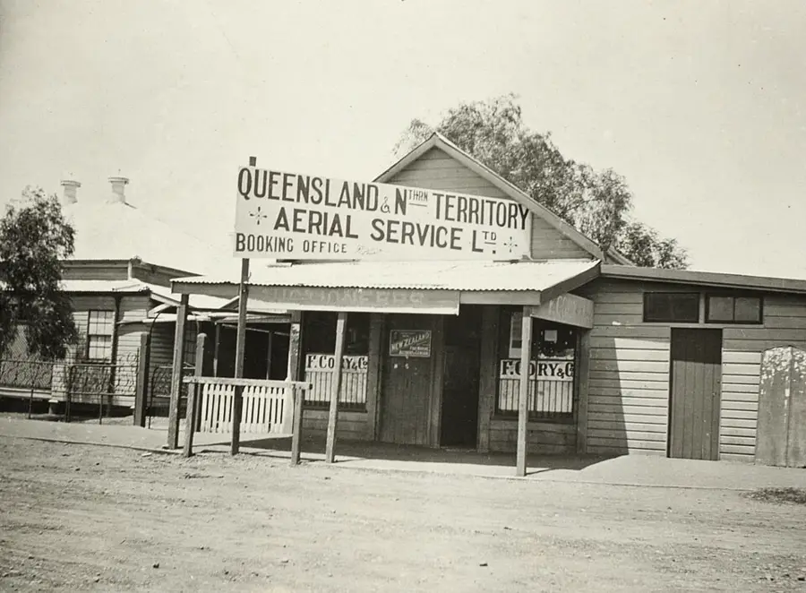
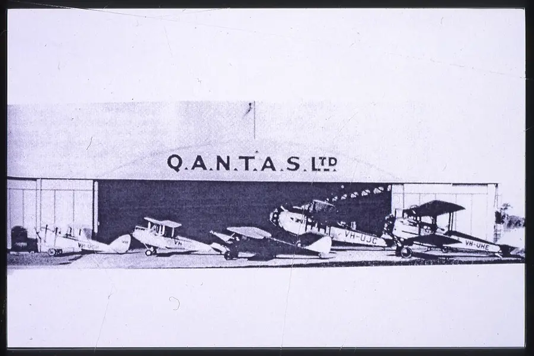

콴타스 항공 Qantas Airways
콴타스 항공(Qantas Airways)은 시드니와 멜버른을 비롯한 주요 공항을 허브로 삼아 국내선과 장거리 국제선을 운항하는 오스트레일리아 항공사이다.
최종 업데이트

콴타스 항공은 어떤 브랜드인가
콴타스 항공은 어떻게 시작되고 성장했나
1920년 11월 26일 퀸즐랜드 윈튼에서 폴 맥기니스, 허드슨 피시, 퍼거스 맥마스터, 아서 베어드가 퀸즐랜드 앤드 노던 테러토리 에어리얼 서비스즈 리미티드라는 이름으로 창립했다. 초기에는 아브로 504K를 운용하고 정부 보조금을 받아 퀸즐랜드 서부에서 항공우편 서비스를 제공했다.
1934년 영국의 제국항공과 새 회사를 세웠으며 1935년 최초의 국제선에 취항했다. 제2차 세계대전 이후 정부가 회사를 장악했으며, 장거리 국제선과 태평양 노선을 확대하고 1993년 정부 주도로 민영화했다.
콴타스 항공의 브랜드 아이덴티티는 무엇인가
오스트레일리아의 지리적 조건에 대응한 장거리 캥거루 루트와 항공사 최초의 비즈니스 클래스 도입 이력이 다른 항공사와 구분되는 지점이다.
콴타스 항공의 대표 제품과 서비스는 무엇인가
콴타스 항공은 지금 어떤 상태인가
본사는 오스트레일리아 뉴사우스웨일스주 시드니의 마스코트에 있으며 1993년 정부 주도로 민영화했다. 완전 출자 자회사로 설립한 젯스타 항공과 함께 복수 브랜드 체계를 구성한다.
연료 가격 상승과 경쟁, 산업 분쟁에 따른 손실과 지출 축소를 이유로 2012년 항공기 35대의 주문을 취소했다.
콴타스 항공 로고는 어떻게 변해왔나
시기는 위키데이터 로고 기간 또는 위키미디어 커먼즈 파일 정보 기준입니다. 이미지를 누르면 원본 파일과 라이선스를 볼 수 있습니다.
사진으로 보는 콴타스 항공의 역사


자주 묻는 질문
콴타스 항공는 언제 설립되었나요?
콴타스 항공는 1920년 설립되었습니다.
콴타스 항공는 어떤 산업의 브랜드인가요?
콴타스 항공는 여행·호스피탈리티 분야의 브랜드입니다.
콴타스 항공의 브랜드 아이덴티티는 무엇인가요?
오스트레일리아의 지리적 조건에 대응한 장거리 캥거루 루트와 항공사 최초의 비즈니스 클래스 도입 이력이 다른 항공사와 구분되는 지점이다.
콴타스 항공의 대표 제품은 무엇인가요?
국내선과 국제선 여객 운송을 핵심 사업으로 하며 오스트레일리아 주요 도시와 아시아·태평양·북아메리카·유럽 방면을 연결한다.
콴타스 항공의 본사는 어디에 있나요?
본사는 오스트레일리아 뉴사우스웨일스주 시드니의 마스코트에 있으며 1993년 정부 주도로 민영화했다.
콴타스 항공의 공식 웹사이트는 어디인가요?
콴타스 항공의 공식 웹사이트는 https://www.qantas.com 입니다.
출처와 검증
콴타스 항공 관련 참고: 공식 웹사이트 · 위키데이터 Q32491 · 한국어 위키백과 · 영어 위키백과. 브랜드명은 한글과 원어를 함께 표기하되 데이터에 없는 표기는 만들지 않습니다. 기원 국가·설립연도는 검수된 정의문에서 확인된 값을 우선하고, 없을 때만 공식 웹사이트 URL이 일치하는 위키데이터 개체의 값을 씁니다. 탄생일의 월·일은 위키데이터, 위키백과 정보상자, 본문 가운데 같은 연월로 확인되는 값만 싣고, 출처끼리 다르면 싣지 않습니다. 웹 첫 보관은 인터넷 아카이브가 공식 사이트 첫 화면을 처음 보관한 날로, 사이트 개설일과 다를 수 있습니다. 위키데이터 값은 2026-09-12 기준입니다.